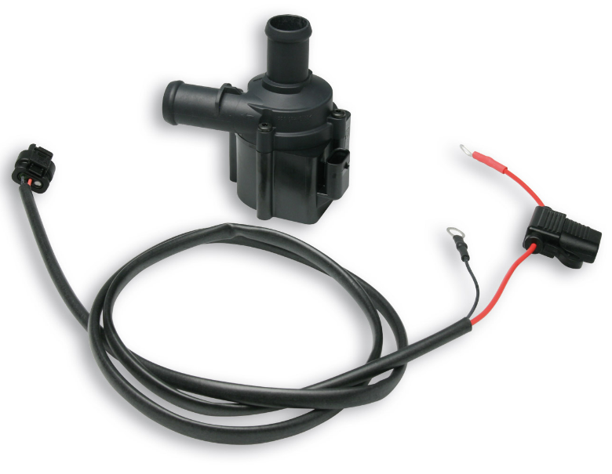
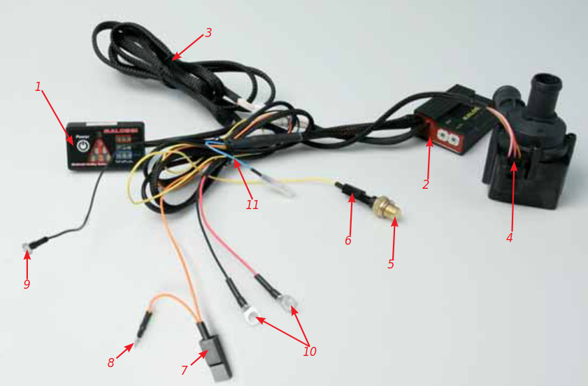
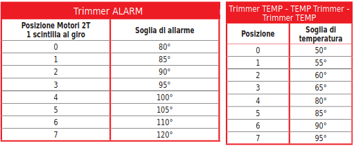
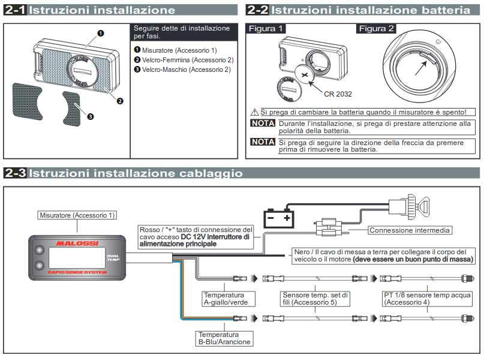
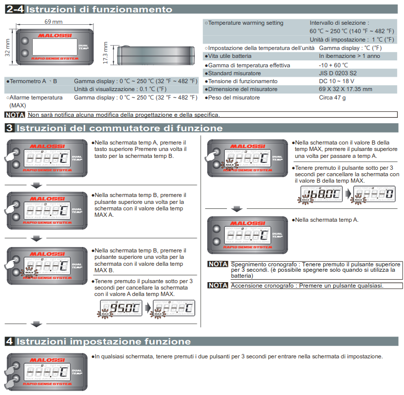
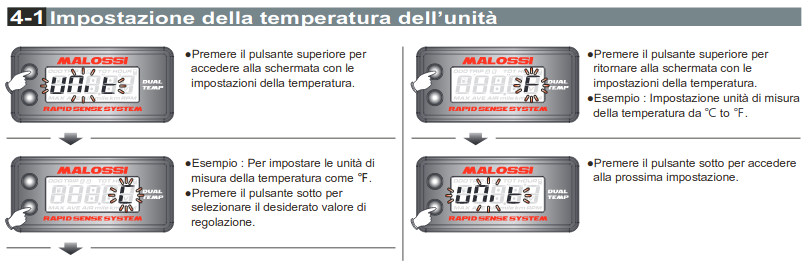
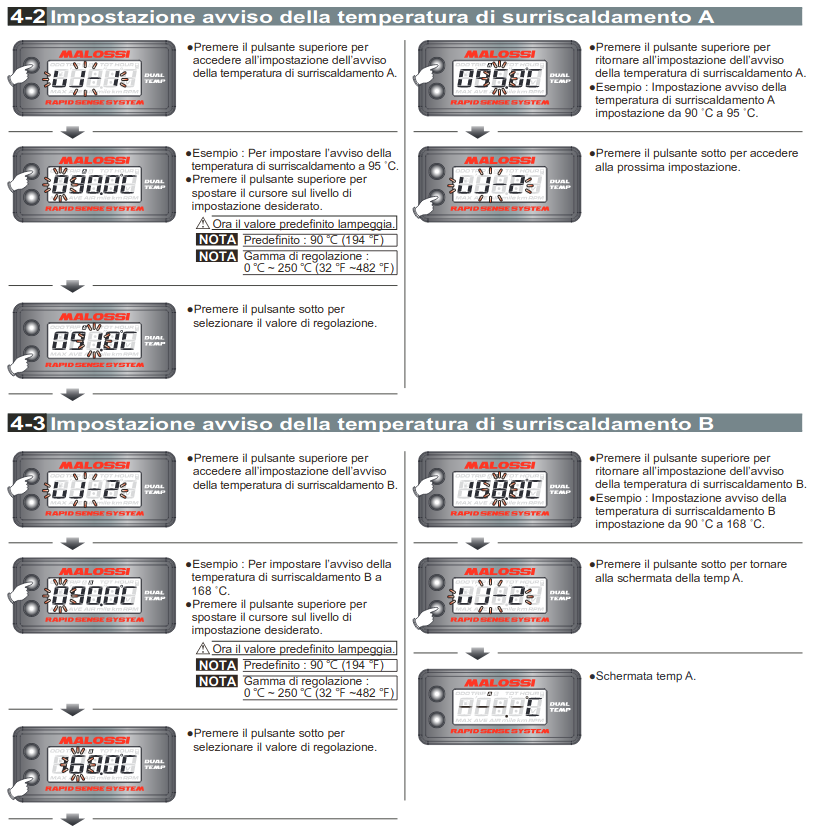
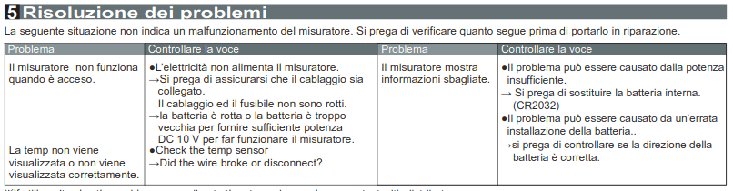

Radiatore MHR Team (7115431)
Per installare questo radiatore si deve escludere completamente l’impianto elettrico e modificare i fari.
Montaggio:
- Ritagliare la placca trasparente inclusa nel kit in modo che convogliano tutta l’aria verso il radiatore.
- Procedere al montaggio delle sagome ottenute, utilizzando del silicone e delle fascette.
- Applicare il radiatore serrando le viti indicate nella figura.
- Una volta montata la carenatura verificare attentamente che non ci siano spazi attraverso i quali l’aria esce senza attraversare il radiatore.
- Montare il tubo che collega il raccordo della testa del gruppo termico col radiatore. Il tubo che collega il radiatore col carter C-One lo collegheremo dopo aver installate la pompa di circolazione liquido nel paragrafo che segue.
Pompa di circolazione liquido Energy Pump (5616363)
- Installare la pompa nel circuito tra il radiatore e l’ingresso dell’acqua nel carter, con la freccia disegnata sulla pompa rivolta verso il motore con i relativi tubi.
- Collocare la pompa in un luogo sicuro in modo che non venga urtata.
- Collegare lo spinotto in dotazione alla pompa.
- Collegare al + e al – i due occhielli del cavo.
Regolatore di temperatura Heat Master Controller (5516096)
- Posizionare il visualizzatore (1) in una posizione ben visibile e agevole nel veicolo, utilizzando il Dual Lock incluso nel kit.
- Portare i cavi nella zona motore e posizionare la centralina (2) servendosi della prolunga (3). Posizionare la centralina in modo che i trimmer siano facilmente accessibili.
- Collegare il connettore (4) all’Energy Pump.
- Installare il termistore (5) nella testa del motore e collegare il faston femmina (6) (cavo giallo).
- Inserire il faston proveniente dalla centralina Heat Master (7) (cavo arancione) al terminale positivo della bobina accensione.
- Riconnettere al bypass (8) il cavo originale per chiudere il circuito.
NB: Il cavo arancione serve per attivare il funzionamento di partenza automatica della pompa dell’acqua
- Collegare l’occhiello nero –cavo singolo- (9) a massa sotto la bobina.
- Collegare la coppia di cavi rosso e nero (10) ai poli della batteria (rosso: positivo – nero: negativo).
- Il cavo azzurro (11) deve restare libero.

Funzionamento display
Sul display sono presenti:
- Tasto ON/OFF.
- Simbolo allarme (triangolo).
- 3 livelli di stato.
- Sensore luminosità ambiente.
Tasto ON/OFF
- Singola pressione a sistema spento: accensione. Questo stato di funzionamento è riconoscibile dal check dei 3 stati cui segue l’accensione della spia a seconda della temperatura.
- Singola pressione a sistema acceso: spegnimento.
- Pressione prolungata (+di 4 secondi) a sistema spento: funzione di pompa a massima portata. Questo stato di funzionamento è riconoscibile dalla sequenza di accensione dei 3 stati cui segue il lampeggìo del simbolo allarme (triangolo).
Simbolo allarme (triangolo)
L’accensione di questa spia segnala un allarme:
- Spia accesa lampeggiante + spia status HOT: sovratemperatura motore.
- Spia accesa lampeggiante + spia status COLD: attivazione funzione recovery (problema connessione o danneggiamento cavo (6) o sensore temperatura (5).
Allarme
Esistono vari tipi di allarmi che hanno impatti differenti sia sul funzionamento pompa sia sulla spia allarme.
Gli allarmi attivi sono i seguenti:
- Allarme sensore di temperatura acqua non connesso: si attiva quando il sensore è vicino agli estremi di tensione leggibili. La conseguenza è di attivare il controllo al massimo del funzionamento pompa e di accendere la spia di allarme con una frequenza lenta.
- Allarme tensione batteria troppo bassa: si attiva al di sotto dei 9V. Con questa diagnosi le 3 spie di controllo della temperatura (COLD/OK/HOT) vengono accese in modo intermittente. Non incide né sul funzionamento pompa né sulla spia di allarme/diagnosi.
- Allarme pompa non connessa: si accende la spia allarme/diagnosi in modo fisso e non incide sul funzionamento della pompa.
- Allarme pompa in corto circuito: si attiva se la corrente di alimentazione della pompa è troppo elevata oppure se il feedback sull’alimentazione è troppo basso. Si accende la spia allarme/diagnosi in modo fisso e si toglie l’alimentazione alla pompa. Si ritenta di alimentare più volte la pompa in modo temporizzato, ma se l’errore persiste si stacca l’alimentazione in modo definitivo, fino alla successiva accensione della centralina. Il funzionamento della pompa viene forzato al minimo.
- Allarme errore pompa: si attiva quando il segnale del feedback del pilotaggio è compreso tra due soglie di tensione molto basse. Si accende la spia di allarme/diagnosi in modo fisso e non incide sul funzionamento della pompa.
Spie Status
- COLD (led blu): indica che la temperatura ottimale preimpostata non è ancora stata raggiunta.
- OK (led verde): indica il raggiungimento della temperatura ottimale preimpostata all’interno di ±4°C dal target richiesto.
- HOT (led rosso): indica che la temperatura ottimale preimpostata è stata superata, ma non si è ancora in una situazione di allarme.
Centralina
Sulla centralina sono presenti 2 trimmer:
- Il trimmer TEMP regola le soglie di temperatura di funzionamento del motore.
- Il trimmer ALARM regola le soglie di allarme segnalate dall’accensione del triangolo sul display.
Consigliamo la posizione 1 per il trimmer Alarm e la posizione 3 per il trimmer Temp
NB: Il cavo arancione serve per attivare il funzionamento di partenza automatica della pompa dell’acqua
- Collegare l’occhiello nero –cavo singolo- (9) a massa sotto la bobina.
- Collegare la coppia di cavi rosso e nero (10) ai poli della batteria (rosso: positivo – nero: negativo).
- Il cavo azzurro (11) deve restare libero.
Rapid Sense System Dual Temp (5817491B)
Prenderemo in esame questo strumento provvisto da Malossi, ma questa sezione è valida per qualsiasi altro strumento per il controllo della temperatura. L’argomento verrà comunque ampliato nel capitolo relativo alle strumentazioni. Si consiglia di installarlo adesso (seguendo l’ordine dei capitoli come si susseguono) in quanto ci sarà molto utile nel prossimo capitolo quando parleremo del gruppo termico.
    Spurgo
Attenzione: usare solo acqua distillata.
- Collegare alla testa il tubo proveniente dal radiatore e bloccarlo con la relativa fascetta.
- Riempire l’impianto di liquido fino all’orlo del tappo del radiatore e controllare che non goccioli da nessuna parte altrimenti individuare la perdita.
- A tappo aperto, allentare la vite di spurgo in modo che sfiati l’aria riavvitando non appena esce acqua la vite di spurgo e riempire di nuovo con acqua fino all’orlo del tappo.
- A tappo aperto, accendere la pompa acqua elettrica per 15 secondi riabboccando man mano col liquido all’orlo del tappo fino a quando il livello dell’acqua non scende più.
- Spegnere la pompa elettrica e aspettare che sfiati completamente dal tappo fino a quando il liquido non scende più. Riabboccare di nuovo quindi con l’acqua fino all’orlo.
- Ripetere il punto 3, 4 e 5 fino a quando spegnendo la pompa elettrica il liquido non scenderà più.
- Chiudere il tappo, avviare il motore con il veicolo sul cavalletto e lasciarlo in moto accelerando moderatamente alcune volte fino a che il liquido di raffreddamento non abbia raggiunto la temperatura di esercizio 50-60 gradi.
- Spegnere il motore, effettuare un ulteriore spurgo allentando l’apposita vite. Se necessario, ripristinare il livello del liquido nel vaso di espansione.
Bonus: Cicli termici
Effettuare 2 o 3 cicli termici portando il motore da freddo a temperatura d’esercizio 50-55 gradi e spegnendo.